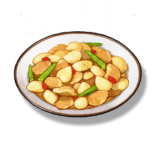

Caltrop Stir Fry
Supplies

Increases the attack of all Resonators in the team by 24% and the Crit. Rate by 15% for 30 minutes, only effective for the player's Character in multiplayer games.
A famous medicinal dish in Huanglong, its ingredients are simple, just need to stir fry the Caltrop with the breast meat after shelling. This dish can calm the mind and strengthen the heart, and is popular with the people of Huanglong.